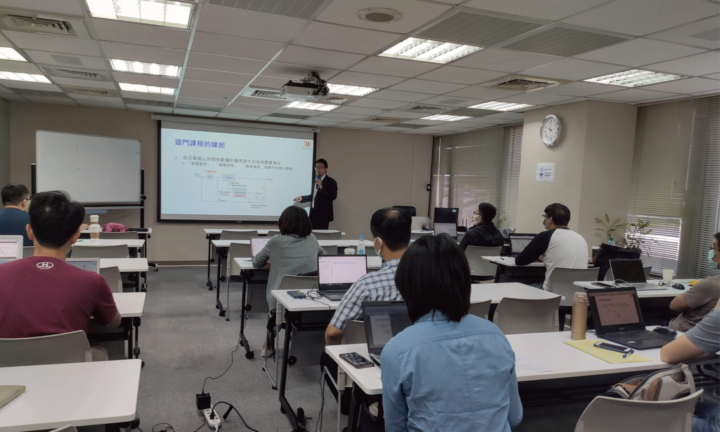

務實落地
不以文件數量衡量成果，而是讓管理要求能對應實際流程與工作情境。
HUANG WEN-HUNG · CONSULTANT
我是黃文鴻，博創資訊科技輔導顧問。以國際標準為基礎，協助企業與政府組織把資安、隱私管理要求，轉化為真正可執行、可持續改善的管理能力。
ABOUT ME / 關於我
在快速變動的數位環境中，資訊安全與隱私保護不只是合規要求，更是組織建立信任、管理風險與持續營運的重要基礎。
我深耕資安管理顧問領域，重視從組織現況與實際工作流程出發，將複雜的標準要求轉化為團隊理解、執行並持續改善的管理方法。不只協助準備稽核，更希望制度能在專案結束後持續發揮作用。
不以文件數量衡量成果，而是讓管理要求能對應實際流程與工作情境。
把風險辨識、追蹤與改善融入管理循環，逐步建立長期運作能力。
與組織團隊協作，協助同仁理解制度、熟悉責任並逐步具備自主維運能力。
INTRODUCTION / 影片介紹
透過影片了解我的工作方式、服務理念，以及如何陪伴組織把資安治理真正落實在日常。
SERVICES / 專業服務
從現況診斷、風險評估到制度建置與內部培訓，依組織需求規劃適切的導入路徑。
協助組織辨識資訊資產與風險，建立適合營運情境的 ISMS 管理制度。
常見需求：制度尚未成形、流程分散、風險管理缺乏一致性。
工作重點：現況盤點、風險評鑑、制度文件、教育訓練與稽核準備。
協助組織梳理個人資料處理活動，建立隱私治理與管理流程。
常見需求：個資責任不清、流程難追蹤、隱私風險缺少系統化管理。
工作重點：資料流程盤點、角色責任、隱私風險與影響評估機制。
從治理責任、風險與管理流程角度，協助組織理解 AI 管理系統相關議題。
常見需求：導入 AI 工具後，治理責任與風險管理方式尚待釐清。
工作重點：依組織需求討論 AI 治理架構、風險管理與制度規劃方向。
從組織整體管理角度，梳理資安、個資保護及相關法遵要求之間的關聯。
常見需求：不同制度重複作業、權責分散或管理流程不一致。
工作重點：整合管理機制、釐清權責與建立持續改善節奏。
協助組織建立風險辨識、評估、處理與追蹤機制，讓管理決策更有依據。
常見需求：風險清單與實際營運脫節，改善措施缺少追蹤。
工作重點：風險評鑑方法、處理計畫、責任分工與追蹤機制。
透過培訓、演練與改善，協助團隊理解制度要求並提升執行能力。
常見需求：制度已建立，但同仁不熟悉流程或稽核準備不足。
工作重點：依組織情境規劃訓練、稽核演練與改善追蹤。
服務範圍與實際工作內容將依組織需求、合作約定及相關標準／驗證機構規定確認。網站內容不構成取得認證或特定法遵結果的保證。
EXPERIENCE / 服務經驗
累積逾 40 家公民營機構的服務經驗，接觸不同組織規模、工作流程與管理需求。以下呈現產業經驗範圍，不代表客戶推薦或特定成果背書。
制度必須回應組織真正面對的風險，也必須能被人理解、執行與持續改善。
理解公共服務流程、跨單位協作與制度管理需求。
關注敏感資訊保護、營運流程與管理責任的協調。
面對多元資訊系統、資料使用情境與不同角色權責。
重視風險管理、資料保護與控制流程的一致性。
關注資訊系統、資料流動、供應鏈協作與快速變動的營運環境。
PORTFOLIO / 現場紀實
從企業教室到團隊交流，透過實際培訓與討論，讓資安治理成為組織可以理解、執行並持續改善的能力。




INSIGHTS / 專業觀點
以實務導入為出發點，持續整理資安、隱私與治理相關知識。
MY SLOGAN / 我的觀點
好的管理系統不應只是被關在文件裡，而是要持續回應現場、協助團隊前進，形成可以反覆檢視與改善的循環。
從管理目標、適用範圍、資訊資產與現有流程開始，建立更務實的導入起點。
以資料處理活動、角色責任與風險評估為線索，理解隱私管理制度的實務價值。
從責任分工、教育訓練、執行證據與改善追蹤，建立制度持續運作的條件。
主題摘要 · 示範內容
此區為網站展示用的示範摘要，正式上線前請替換為經確認的完整文章。
PROCESS / 合作流程
每個組織的起點不同。合作流程以需求與現況為基礎，依實際範圍調整工作內容。
了解組織目標、目前挑戰與預期方向。
檢視管理制度、實務流程與差距。
依組織情境規劃制度、文件與作業方式。
協助團隊理解要求、執行流程並追蹤改善。
依約定協助準備驗證工作，建立持續維運方向。
SOLUTIONS / 解決方案
延伸專業服務，協助您從制度建立到人員培訓，逐步降低資料外洩風險。
留下資訊，我會依照適合的時間與您聯繫。
LET'S BUILD RESILIENCE
無論您正準備導入管理系統、改善既有制度，或希望進一步了解資安與隱私治理，都歡迎預約交流，討論最適合您組織的方向。
預約專業諮詢合規只是起點，韌性才是目標。